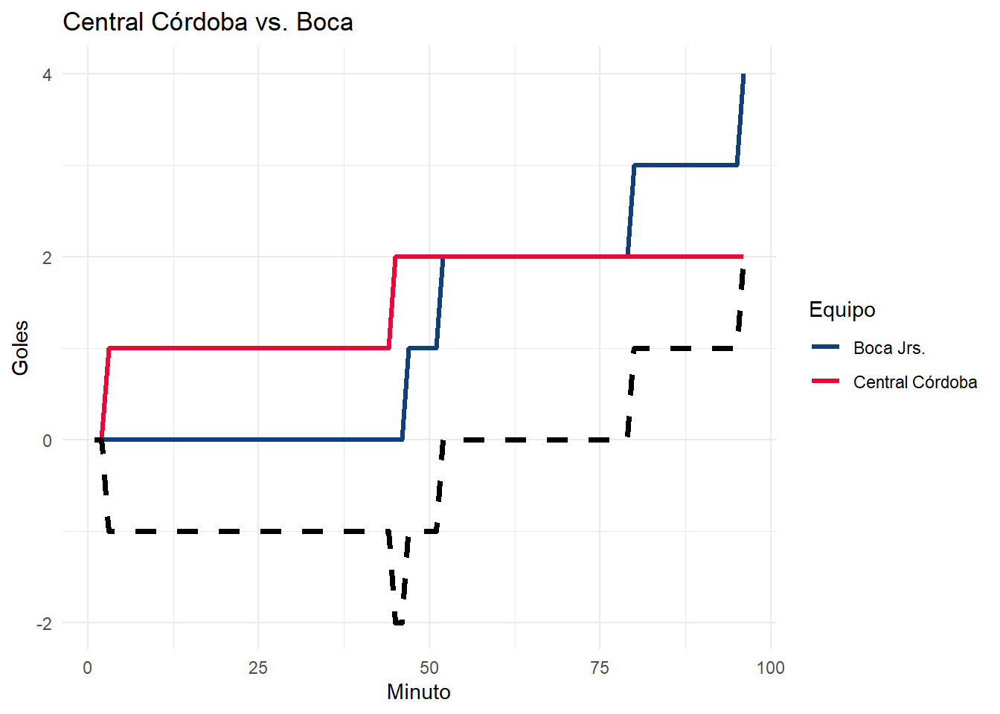
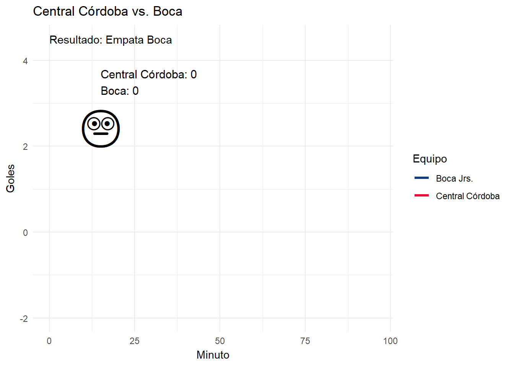

Ver código
library(readxl) # Leer archivos de excel
library(tidyverse) # Transformar y limpiar datos
library(ggplot2) # Hacer gráficos
library(gganimate) # A lo que vinimos, a animar los gráficosEn la sesión de hoy veremos dos métodos para añadir interactividad a los gráficos con dos paquetes:
gganimate: para animar e incorporar movimiento a una visualización.
plotly: que permite añadir información adicional a un gráfico al pasar el mouse sobre él.
Tengan en cuenta que para sacar el máximo provecho de estos graficos necesitaremos un medio que soporte este tipo de gráficos, por ejemplo, R Markdown, Xaringan, Quarto, o bien Shiny.
Para este caso, vamos a necesitar los siguientes paquetes:
library(readxl) # Leer archivos de excel
library(tidyverse) # Transformar y limpiar datos
library(ggplot2) # Hacer gráficos
library(gganimate) # A lo que vinimos, a animar los gráficosPrimero un poema.
Arranquemos con una pavada. Desde que Diego Martinez, el actual DT de Boca, asumió su cargo en Diciembre de 2023, una de las características que tiene su gestión (además de jugar mejor), es que varios partidos los comenzó perdiendo, y terminó ganando. Al día de hoy, (22 de mayo de 2024), ganó 12 partidos, de los cuales en 5 el primer gol lo hizo el rival.
Así que qué mejor ejemplo para graficar este caso de uso que aprovechando el vendaval de sensaciones que es mirar un partido de Boca Jrs. de la era Martinez.
En la fecha 2 del torneo local, Boca enfrentó como visitante a Central Córdoba de Santiago del Estero, que convirtieron el primer gol a los 3’ de comenzado el partido, y luego hicieron el 2-0 en el tiempo añadido en el final del primer tiempo.
Apenas comenzó el 2° tiempo, Equi Fernandez hizo el 2-1, la Bestia Merentiel lo empató y lo dió vuelta a los 52’ y 80’ respectivamente, y cuando el partido estaba en tiempo añadido, Equi Fernandez puso el 2-4 final.
Acompáñenme a experimentar el vendaval de sensaciones que es vivir un partido de Boca en un gráfico.
Vamos a usar el siguiente dataset:
# Carga de datos
boca <- read_excel("boca_vibes.xlsx")
# Explora las primeras 6 filas
head(boca)# A tibble: 6 × 5
minuto central_cordoba boca diferencia resultado
<dbl> <dbl> <dbl> <dbl> <chr>
1 1 0 0 0 Empata Boca
2 2 0 0 0 Empata Boca
3 3 1 0 -1 Pierde Boca
4 4 1 0 -1 Pierde Boca
5 5 1 0 -1 Pierde Boca
6 6 1 0 -1 Pierde BocaEl dataset contiene un detalle de los resultados minuto a minuto, podemos observar el primer gol de Central Córdoba convertido por Rodrigo Uriel Atencio a los 3 minutos que deja a Boca abajo en el marcador.
Para hacer el primer gráfico necesitamos transformar un poco los datos para que las columnas de central_cordoba y de boca nos queden en una misma columna.
partido <- boca |>
pivot_longer(cols = c(central_cordoba, boca),
names_to = "equipo",
values_to = "goles") |>
mutate(equipo = str_replace(equipo, "central_cordoba", "Central Córdoba"),
equipo = str_replace(equipo, "boca", "Boca Jrs."))
# Ver cómo quedó el dataset
head(partido)# A tibble: 6 × 5
minuto diferencia resultado equipo goles
<dbl> <dbl> <chr> <chr> <dbl>
1 1 0 Empata Boca Central Córdoba 0
2 1 0 Empata Boca Boca Jrs. 0
3 2 0 Empata Boca Central Córdoba 0
4 2 0 Empata Boca Boca Jrs. 0
5 3 -1 Pierde Boca Central Córdoba 1
6 3 -1 Pierde Boca Boca Jrs. 0También vamos a agregar un par de columnas que van a reflejar el estado de ánimo
Usemos un gráfico de líneas para visualizar el partido.
# Guardamos el gráfico en un objeto llamado 'p'
p <- ggplot(partido) + # Datos
geom_line(aes(x = minuto, y = goles, color = equipo), # Tipo de gráfico y variables
linewidth = 1.1) + # Ancho de la línea
scale_color_manual(values = c("#103f79", "#EA0838")) + # Colores custom
theme_minimal() + # Estilo del gráfico
labs(title = "Central Córdoba vs. Boca",
x = "Minuto", y = "Goles",
color = "Equipo") +
geom_line(data = boca, aes(x = minuto, y = diferencia), linewidth = 1.3,
linetype = 2)
# Veamos el gráfico
p
Le podemos incorporar una línea adicional para visualizar cómo iba el partido para Boca, en el cual podemos apreciar cómo arranca perdiendo, cerca del minuto ’50 lo empata, y en el final lo da vuelta.
# Añadir una columna para agregar un emoji en función de la diferencia y los goles
boca <- boca |>
# Arranca el partido
mutate(estado = if_else(diferencia == 0 , "meh", if_else(
# Primer gol de Central Córdoba
diferencia < 0 & central_cordoba == 1, "cry", if_else(
# Segundo gol de Central Córdoba
diferencia < 0 & central_cordoba == 2, "angry", if_else(
# Primer gol de Boca
diferencia < 0 & boca == 1, "fear", if_else(
# Segundo gol de Boca
diferencia == 1 & boca == 2, "biceps", if_else(
# Tercer gol de Boca y cuarto gol
diferencia == 1, "smile", "lol")
)
)
))))
# Mapear cada nombre de emoji a un emoji
# Link al paquete de emoji: https://github.com/hadley/emo
boca <- boca |>
mutate(emoji = map_chr(estado, emo::ji))
# Veamos como quedan los datos
head(boca)# A tibble: 6 × 7
minuto central_cordoba boca diferencia resultado estado emoji
<dbl> <dbl> <dbl> <dbl> <chr> <chr> <chr>
1 1 0 0 0 Empata Boca meh "\U0001f610"
2 2 0 0 0 Empata Boca meh "\U0001f612"
3 3 1 0 -1 Pierde Boca cry "\U0001f622"
4 4 1 0 -1 Pierde Boca cry "\U0001f622"
5 5 1 0 -1 Pierde Boca cry "\U0001f622"
6 6 1 0 -1 Pierde Boca cry "\U0001f622"# Hagamos el gráfico final con anotaciones
p +
# Añadimos anotaciones en función de los goles
geom_text(data = boca, aes(x = 15, y = 3.5,
label = paste0("Central Córdoba: ", central_cordoba,
"\nBoca: ", boca)),
size = 4, # Tamaño de la letra
hjust = 0) + # Alinea a la izquierda
# Añadimos anotaciones usando emojis
geom_text(data = boca, aes(x = 15, y = 2.5, label = emoji),
size = 15) +
# Añadimos un "subtítulo"
geom_text(data = boca, aes(x = 0, y = 4.5, label = paste0("Resultado: ", resultado)), hjust = 0) +
# Animemos el gráfico
transition_reveal(along = minuto)
Vamos con algo simple, carguemos un subset histórico de la Encuesta KIWI de Sueldos de RH:
# Cargando datos
kiwi <- read.csv("encuestas_kiwi.csv", sep = ";")
# Explorar 6 filas
head(kiwi) genero pais origen_capital puesto funcion
1 Masculino Argentina Nacional Gerente Generalista
2 Femenino Argentina Nacional Analista Administración de personal
3 Masculino Argentina Multinacional HRBP Relaciones laborales
4 Femenino Argentina Nacional Analista Reclutamiento y selección
5 Femenino Argentina Nacional Gerente Generalista
6 Masculino Argentina Multinacional HRBP Generalista
anios_empresa sueldo_bruto sueldo_dolar satisfaccion
1 20 250000 2980.0930 5
2 7 55700 663.9647 3
3 8 55000 655.6205 5
4 2 47000 560.2575 3
5 10 86747 1034.0565 5
6 14 85500 1019.1918 2
busqueda anio
1 No, pero escucho ofertas 2020
2 No, pero escucho ofertas 2020
3 No, pero escucho ofertas 2020
4 No, pero escucho ofertas 2020
5 No estoy buscando cambiar 2020
6 Sí, activamente 2020Empecemos con algo simple, calculemos la mediana salarial por puesto y por año:
# Creamos una tabla con la mediana salarial por puesto por año
mediana_anual <- kiwi |> # Creamos una tabla nueva
group_by(anio, puesto) |> # Agrupamos por anio y puesto
summarise(mediana = median(sueldo_bruto)) |> # Calculamos la mediana salarial
ungroup()
mediana_anual# A tibble: 24 × 3
anio puesto mediana
<int> <chr> <dbl>
1 2020 Administrativo 46000
2 2020 Analista 64248.
3 2020 Gerente 175000
4 2020 HRBP 85000
5 2020 Jefe 106012
6 2020 Responsable 75000
7 2021 Administrativo 70000
8 2021 Analista 105000
9 2021 Gerente 283000
10 2021 HRBP 135000
# ℹ 14 more rowsVamos a hacer un gráfico base, en el cual calcularemos la mediana salarial por año por cada puesto
# Construimos el gráfico
p <- ggplot(mediana_anual, aes(x = anio, y = mediana, fill = puesto)) +
geom_col(position = "dodge") +
# Modifica cómo se muestran las etiquetas del eje y
scale_y_continuous(labels = scales::comma_format(big.mark = ".",
decimal.mark = ",")) +
labs(title = "Evoloción de la Mediana Salarial por Puesto",
subtitle = "En Pesos Argentinos",
x = "Año", y = "Mediana (AR$)",
fill = "Puesto",
caption = "Fuente: Encuesta KIWI de Sueldos de RH") +
theme_minimal() # Modifica el estilo del gráfico
p
Una posible animación podría ser la siguiente:
# Animate gráfico! XD
p +
transition_states(anio,
wrap = FALSE) + # Impide que transicione del final al inicio
shadow_mark() + # Mantiene el elemento anterior
enter_fade() # Los elementos aparecen con un efecto de desvanecer
En los casos anteriores veíamos cómo los gráficos se mueven automáticamente. Pero, nosotros podemos controlar que el gráfico se mueva cuando nosotros lo necesitemos, en función de la historia que necesitemos contar
# Creamos un nuevo gráfico
q <- kiwi |>
# Filtramos los datos
filter(anio == 2023, genero %in% c("Hombre cis", "Mujer cis")) |>
# Creamos un scatterplot
ggplot(aes(x = origen_capital, y = sueldo_bruto, colour = genero)) +
geom_point(size = 4, alpha = 0.4, position = position_jitter(0.2)) +
# Modifica las etiquetas del eje y
scale_y_continuous(label = scales::comma_format(big.mark = ".",
decimal.mark = ",")) +
theme_minimal()
# Visualizar el gráfico
q +
labs(title = "Relación entre Sueldo y Género",
x = NULL, y = "Sueldo Bruto (AR$)",
color = "Género",
fuente = "Fuente: Encuesta KIWI de Sueldos de RH")
Ahora veamos qué ocurre cuando animamos por puesto
# Añadimos visualización
q +
transition_states(puesto, # Animamos por la variable puesto
transition_length = 3,
state_length = 1) +
shadow_wake(wake_length = 0.05) +
labs(title = "Relación entre Sueldo y Género",
subtitle = "Puesto: {next_state}", # Cambia el subtítulo en función de la animación
x = NULL, y = "Sueldo Bruto (AR$)",
color = "Capital",
fuente = "Fuente: Encuesta KIWI de SUeldos de RH")
plotly es un paquete que le agrega cierta interacción a los gráficos, equivalente a los tooltips de otras herramientas (pasas el mouse por encima de un gráfico y se abre un cuadrito de información. Esto permite agregar más información al gráfico cuando estás presentando.
Veamos un ejemplo. Calculemos la satisfacción promedio por puesto y género en 2023.
# Cargamos la encuesta kiwi
kiwi <- read.csv("encuestas_kiwi.csv", sep = ";")
# Calulamos la satisfacción promedio para el año 2023 según género
feliz <- kiwi |>
filter(!is.na(satisfaccion),
anio == 2023,
genero %in% c("Hombre cis", "Mujer cis")) |>
group_by(puesto, genero) |>
summarise(satisfaccion_promedio = round(mean(satisfaccion),1),
Respuestas = n())
# Veamos la tabla final
feliz # A tibble: 12 × 4
# Groups: puesto [6]
puesto genero satisfaccion_promedio Respuestas
<chr> <chr> <dbl> <int>
1 Administrativo Hombre cis 2.5 2
2 Administrativo Mujer cis 3 7
3 Analista Hombre cis 4.2 20
4 Analista Mujer cis 3.7 78
5 Gerente Hombre cis 4.3 10
6 Gerente Mujer cis 3.9 15
7 HRBP Hombre cis 4.5 2
8 HRBP Mujer cis 3.4 7
9 Jefe Hombre cis 3.5 4
10 Jefe Mujer cis 3.2 9
11 Responsable Hombre cis 4.2 10
12 Responsable Mujer cis 3.8 32Veamos el gráfico base con el que trabajaremos:
y <- ggplot(feliz, aes(x = satisfaccion_promedio, y = puesto, fill = genero,
a = Respuestas)) +
geom_col(position = "dodge") +
labs(title = "Satisfacción Promedio por Puesto",
x = "Satisfacción",
y = NULL,
fill = "Género") +
theme_minimal()
y
Y ahora sumamos la magia de plotly.
library(plotly)
ggplotly(y)Una de las posibilidades interesantes que ofrece plotly es la posibilidad de hacer zoom en alguna sección del gráfico:
jerarquicos <- kiwi |>
filter(sueldo_dolar < 2000,
puesto %in% c("HRBP", "Gerente", "Jefe", "Responsable"))
# Creamos un gráfico
z <- ggplot(jerarquicos, aes(x = anios_empresa,
y = sueldo_dolar,
color = puesto)) +
geom_point(size = 2, alpha = 0.4) +
theme_minimal() +
labs(title = "Relación entre sueldo y antigüedad",
x = "Antigüedad", y = "Sueldo en U$S",
caption = "Fuente: Encuesta KIWI de Sueldos de RH",
color = "Puesto")
# Ver el gráfico
ggplotly(z)Estos son algunas de las referencias y recursos que usamos para armar esta sesión
gganimate Live Cookbook: Slides
Building an animation step by step with gganimate
Página de gganimate
Interactive web-based data visualization with R, plotly, and shiny, Cap 33 Improving ggplotly
Página de plotly
Seguinos en nuestras redes sociales para estar al tanto de todas nuestras novedades y actividades: r4hrclub | Twitter, Instagram, Facebook | Linktree
Podés descargar el script en Google Drive y ver la grabación de la sesión en YouTube: